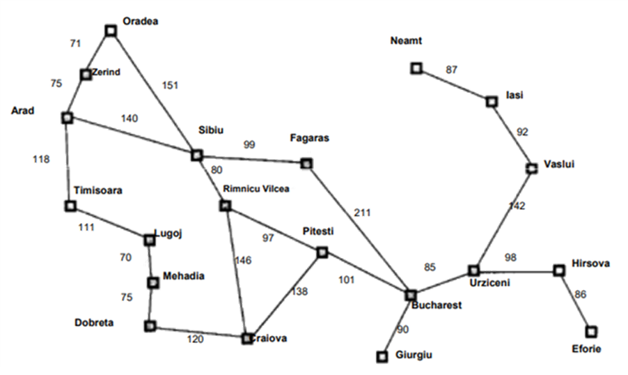

Algoritmo de búsqueda heurística voraz primero el mejor
Inteligencia Artificial IBusquedas heurísticas 06/03/2020 Descripción del algoritmo heuristico. 4.8 1790
Algoritmo de búsqueda heurística voraz primero el mejor
Expande el nodo más cercano al objetivo, asumiendo que probablemente conduzca más rápidamente a la solución.
La función de evaluación f(n) es la función heurística h(n).
f(n) = h(n)
Donde h(n) = costo estimado del camino más barato desde el nodo n hasta el objetivo.
El término Voraz (Greedy) ó Avaro es porque en cada paso trata de situarse tan cerca del objetivo como pueda, seleccionando el nodo con menor función de evaluación f(n).
- No necesariamente brinda la solución óptima
- Puede no encontrar la solución si no se cuida la repetición de nodos
Algoritmo de búsqueda heurística voraz primero el mejor
- 0:00: Explicación del algoritmo
- 1:20: Inicio del ejemplo
- 3:47: Segundo ejemplo 8-Puzzle
Ejercicio de busqueda voraz primero el mejor
Para aplicar los conocimientos adquiridos se proponen los siguientes ejercicios a resolver:
- Viajar de Arad a Bucharest
- Viajar de Timisoara a Bucharest
- Viajar de Giurgiu a Oradea
- Mapa
- Tabla H(n)
Ejemplo de una busqueda voraz primero el mejor
Siguiendo las metricas del algoritmo, se realizará el ejercicio de búsqueda comenzando por Arad, hasta llegar a Bucharest, la repetición de nodos queda a elección de cada uno, en este caso se repetiran nodos.
- Partimos de Arad, teniendo tres caminos posibles, el costo H(n) más bajo es Sibui con 253, este será nuestro proximo destino.
- Una vez en Sibui se abren 4 caminos más, entre estos caminos esta Arad, sin embargo, al ser Fagaras el costo más bajo pasaremos a el.
- Ya en Fagaras se abren 2 nuevos caminos, entre estos Bucharest, nuestro destino final, al tener costo 0, será visitado a continuación.
- Llegamos a Bucharest, la ruta obtenida es: Arad > Sibui > Fagaras > Bucharest
- Paso 1
- Paso 2
- Paso 3
- Paso 4
Presentación explicativa del algoritmo busqueda voraz primero el mejor
En esta presentación se da una breve explicación sobre el algoritmo, su función costo y se proporcionan 2 ejemplos sobre el mismo
- Ejemplo con mapa de un conjunto de ciudades
- Problema de 8-Puzzle